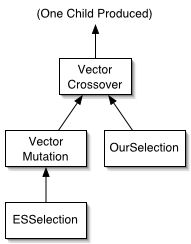

| ECJ |
In the third tutorial, we will build a generational Evolution Strategy (ES) for a problem requiring our individuals to be vectors of doubles. The tutorial will also show how to perform and recover from checkpointing, how to make a custom selection operator, how to use the setup() method, how to make a custom statistics class, and how to read and write populations to files.
Go into the ec/app directory and create a directory called tutorial3. In this directory, create a file called tutorial3.params. In this file, add as a first line the following:
parent.0 = ../../es/es.params
This tells us that we will be using the ec.es package facility, which implements Evolution Strategies and Evolutionary Programming. This package includes a special selection method, ec.es.ESSelection and two special breeders, ec.es.MuCommaLambdaBreeder and ec.es.MuPlusLambdaBreeder which handle the two main kinds of ES selection and breeding (the [mu,lambda] and [mu+lambda] strategies respectively).
A quick refresher on Evolution Strategies. lambda represents the number of children we create each generation. mu represents the number of parents used to create the children. lambda must be a multiple of mu. The [mu,lambda] and [mu+lambda] strategies are truncation selection procedures, meaning that parents are picked simply by deleting the N worst individuals and keeping the mu best ones.
The basic [mu,lambda] evolution loop works as follows: the mu best individuals from the previous population are retained, and the others are discarded. These mu individuals are called the "parents". Each parent gets to produce lambda/mu children: thus the total number of children is lambda. These lambda children form the next generation. The basic [mu+lambda] evolution work is similar, except that it is elitist. The lambda children, plus the mu parents which created them, together form the next generation. Evolutionary Programming's (EP's) 50% truncation procedure works essentially the same as the [mu+lambda] procedure, except that mu and lambda are the same size.
One gotcha is how large the first generation population is. Traditionally, both strategies assume that even though the [mu,lambda] generations are generally lambda in size, and the [mu+lambda] generations are generally mu+lambda in size, the initial population for both strategies is, weirdly, mu in size. Thus the first population undergoes no selection at all (no children are deleted). That's a little inefficient. ECJ permits the initial population to be any size, so long as it is greater than or equal to mu. For the [mu,lambda] strategy, a good choice is to make the initial population lambda in size. For the [mu+lambda] strategy, try making the initial population mu+lambda in size.
By default the es.params file assumes the [mu,lambda] strategy, with mu=1 and lambda=10. Let's change this to the [mu+lambda] strategy, plus new values for mu, lambda, initial population size (mu+lambda) and generations. We do this by adding the following parameters:
# ...the default option is ec.es.MuCommaLambdaBreeder
breed = ec.es.MuPlusLambdaBreeder
es.mu.0 = 5
es.lambda.0 = 100
pop.subpop.0.size = 105
generations = 200
Note that although they're not associated with the population directly (and are in fact stored inside the ec.es., not Population) the es.mu.0 and es.lambda.0 parameters have a "0" at the end. If you use evolution strategies, ECJ requires that you do so for all of your subpopulations. However, each subpopulation can have a different initial size, different mu, and different lambda. Thus the "0" means these values are for subpopulation 0.
ES and EP were not designed with crossover in mind. Thus they have traditionally assumed that children would have a single parent from which they are mutated. Only later historically was crossover added, in a variety of ways. ECJ includes a special selection method, ec.es.ESSelection, which works specially with ESEvolutionState, to select individuals from the pool of mu parents. When a child is bred, all the ESSelection methods in the pipeline will select the same parent. The next time a child is bred, the methods all select the next parent, and so on, in a round-robin fashion. This way each parent in the pool of mu parents produces the same number of children. You can have other selection methods as well -- Tournament Selection, for example, works fine. And in theory you can have no ESSelection methods, though if you did that, what would be the point of doing ES then?
In this example we will create a crossover breeding pipeline as shown at right. As can be seen, ESSelection will be called once to pick a parent. This parent will be copied and mutated, then crossed over with another parent chosen with OurSelection, a selection method we will define later. Since ES will demand that only one child is produced at a time, the second child mothered by the OurSelection selection method will be discarded automatically. This breeding pipeline is specified with the following parameters:
pop.subpop.0.species.pipe = ec.vector.breed.VectorCrossoverPipeline
pop.subpop.0.species.pipe.source.0 = ec.vector.breed.VectorMutationPipeline
pop.subpop.0.species.pipe.source.0.source.0 = ec.es.ESSelection
# Use our own custom selection operator class
pop.subpop.0.species.pipe.source.1 = ec.app.tutorial3.OurSelection
# We'll talk about this parameter later on
pop.subpop.0.species.pipe.source.1.middle-probability = 0.5
We'll use the well-known Rosenbrock problem, but we'll add a few twists to it (and call it the "OddRosenbrock" problem). The first twist is that we'll have only five doubles in the vector. The second twist is that each gene will have its own min-gene and max-gene constraints:
eval.problem = ec.app.tutorial3.OddRosenbrock
# Doubles and floats use the FloatVectorSpecies
pop.subpop.0.species = ec.vector.FloatVectorSpecies
pop.subpop.0.species.ind = ec.vector.DoubleVectorIndividual
pop.subpop.0.species.fitness = ec.simple.SimpleFitness
# Per-gene mutation probability of 1.0
pop.subpop.0.species.mutation-prob = 1.0
# Use Gaussian Convolution with a standard deviation of 0.5
pop.subpop.0.species.mutation-type = gauss
pop.subpop.0.species.mutation-stdev = 0.5
pop.subpop.0.species.mutation-bounded = true
# One-point crossover
pop.subpop.0.species.crossover-type = one
pop.subpop.0.species.genome-size = 5
pop.subpop.0.species.min-gene.0 = -5.12
pop.subpop.0.species.max-gene.0 = 5.12
pop.subpop.0.species.min-gene.1 = -3
pop.subpop.0.species.max-gene.1 = 2
pop.subpop.0.species.min-gene.2 = -7.6
pop.subpop.0.species.max-gene.2 = 1.1
pop.subpop.0.species.min-gene.3 = 0
pop.subpop.0.species.max-gene.3 = 1.0
pop.subpop.0.species.min-gene.4 = -10.3
pop.subpop.0.species.max-gene.4 = 2.2
# Because we need default min/max genes even if we don't use them
pop.subpop.0.species.min-gene = -100
pop.subpop.0.species.max-gene = 100
Compare this to the min-gene and max-gene stipulations in the previous tutorial. ECJ checks to see if it should use a per-gene min/max-gene setup by checking for the existence of min-gene.0 and max-gene.0. If they are there, it uses min-gene.X and max-gene.X for each separate gene, reverting to ordinary min-gene and max-gene defaults if one is missing.
Note that we're also specifying a form of mutation for our floating-point vector. ECJ supports three default methods: "reset", which just randomizes a gene (and is the default); and "gauss", which does gaussian convolution on the gene, that is, adds to the gene a random number under a gaussian (normal) distribution, and "polynomial", which does polynomial convolution on the gene.. Since we're doing gaussian mutation, let's discuss it. Gaussian mutation requires a standard deviation for the distribution, which we also provide (0.5 is quite extreme, but it works reasonably well for our weird problem). We can still stipulate a mutation probability, though here we've set it to 1.0 (always mutate every gene). We also need to state whether the gaussian mutation is bounded to the minimum and maximum values. In our case, it is. This means that if the gaussian mutation would result in a value outside these values, we try again with new gaussian mutation until we find one which does not.
Now we define the problem proper. Create a file called OddRosenbrock.java in the tutorial3 directory. In this file add the following:
package ec.app.tutorial3;
import ec.util.*;
import ec.*;
import ec.simple.*;
import ec.vector.*;
public class OddRosenbrock extends Problem implements SimpleProblemForm
{
public void setup(final EvolutionState state, final Parameter base) { }
public void evaluate(final EvolutionState state,
final Individual ind,
final int subpopulation,
final int threadnum)
{
if( !( ind instanceof DoubleVectorIndividual ) )
state.output.fatal( "The individuals for this problem should be DoubleVectorIndividuals." );
double[] genome = ((DoubleVectorIndividual)ind).genome;
int len = genome.length;
double value = 0;
// Compute the Rosenbrock function for our genome
for( int i = 1 ; i < len ; i++ )
value += 100*(genome[i-1]*genome[i-1]-genome[i])*
(genome[i-1]*genome[i-1]-genome[i]) +
(1-genome[i-1])*(1-genome[i-1]);
// Rosenbrock is a minimizing function which does not drop below 0.
// But SimpleFitness requires a maximizing function -- where 0 is worst
// and 1 is best. To use SimpleFitness, we must convert the function.
// This is the Koza style of doing it:
value = 1.0 / ( 1.0 + value );
((SimpleFitness)(ind.fitness)).setFitness( state, value, value==1.0 );
ind.evaluated = true;
}
}
package ec.app.tutorial3;
import ec.*;
import ec.util.*;
public class OurSelection extends SelectionMethod
{
// We have to specify a default base
public static final String P_OURSELECTION = "our-selection";
public Parameter defaultBase() { return new Parameter(P_OURSELECTION); }
We'll explain the ec.util.Parameter class later. Next we must load the P probability parameter from the parameter database. To do this, we need to define two things. First, we must define the default base (already done: it's our-selection). Next, we need to define the parameter name. How about: middle-probability. I'd use probability, except that a superclass already uses that. Thus to set this parameter value, the user would define the parameter pop.subpop.0.species.pipe.source.1.probability = ... , and barring that, the system would look for the parameter our-selection.probability = ... We define and load the parameter in the setup() method:
public static final String P_MIDDLEPROBABILITY = "middle-probability"; // our parameter name
public double middleProbability;
public void setup(final EvolutionState state, final Parameter base)
{
super.setup(state,base); // always call super.setup(...) first if it exists!
Parameter def = defaultBase();
// gets a double between min (0.0) and max (1.0), from the parameter
// database, returning a value of min-1 (-1.0) if the parameter doesn't exist or was
// outside this range.
middleProbability = state.parameters.getDoubleWithMax(base.push(P_MIDDLEPROBABILITY),
def.push(P_MIDDLEPROBABILITY),0.0,1.0);
if (middleProbability < 0.0)
state.output.fatal("Middle-Probability must be between 0.0 and 1.0",
base.push(P_MIDDLEPROBABILITY),def.push(P_MIDDLEPROBABILITY));
}
The setup() method is most ECJ objects' constructor. Most ECJ classes are mostly loaded through the ParameterDatabase's instanceForParameter(...) method. This method in turn uses Class.newInstance(), which only calls the empty constructor on the instance. The large bulk of ECJ instances are born through applying clone() to the original instance created with Class.newInstance(). Class.newInstance() does not give us an opportunity to pass the ParameterDatabase to the class so it can initialize itself according to user parameters. Thus immediately after calling the instanceForParameter(...) method, we call the setup(...) method to give the instance a chance to really construct itself.
This is the first time we have used the ec.util.Parameter and ec.util.ParameterDatabase classes. The ParameterDatabase, as discussed earlier, is a table of parameters and their values (stored as strings). You can extract a value in a variety of forms: booleans, numbers, strings, filenames, even as instances and classes. In the example above, we used a method to extract a value as a double, telling the ParameterDatabase to look two places: pop.subpop.0.species.pipe.source.1.middle-probability first, then our-selection.middle-probability if necessary.
Parameters are formed by pushing and popping onto bases. The base passed to us was the parameter pop.subpop.0.species.pipe.source.1 The setup() method always passes you your current parameter base. The "default base" we had defined by creating an initial parameter called our-selection We then formed the relevant parameters for our probability variable by pushing middle-probability onto the end of each of these (pushing adds a period first).
If we discover that we have an invalid or missing probability, we issue a fatal error. As you can see, fatal(...) can take Parameters as optional arguments, and prints them out in a nice way so it's easy to see what parameter caused the problem.
Our class inherits from ec.SelectionMethod, which inherits from ec.BreedingSource, which implements ec.Prototype, which in turn implements ec.Setup, which is where the setup(...) method came from. This method is called when a class is first loaded and initialized at startup-time. From then on, Prototypes are copied from the initial class using Java's clone() facility. Note that in Java, clone() does not deep-clone unless we have overridden it to do so. That's okay, since our parameter is just a double and will get cloned by clone(). But if it were an array, we'd have to override the clone() method in ec.Prototype to do more intelligent cloning.
Selection methods, like breeding pipelines, have methods prepareToProduce(...) and finishProducing(...) which are called prior to and after a chain of produce(...) calls. These methods allow the pipeline to set itself up (gathering sorted statistics of fitness values, or whatever is necessary). Also, there is a method called produces(...) which returns true if we can produce individuals for a given subpopulation. Our pipeline doesn't need to call any of these methods, so we will rely on the defaults in the SelectionMethod class, which do nothing.
This means we need only to write the produce(...) method. A SelectionMethod's produce(...) method is supposed to return an individual from a subpopulation: unlike Breeding Pipelines, Selection Method's produce(...) methods don't copy the individual first -- they just return the original individual selected from the subpopulation. Actually, SelectionMethods have two versions of the produce(...) method. One version returns N individuals as requested. The second returns the index in the subpopulation array of a single selected individual. SelectionMethod has a default implementation of the first method which just calls the second. So here we will just write the second method (though we might override the first one as well, if we liked, in order to make the system faster). We add to the file:
public int produce(final int subpopulation, final EvolutionState state, final int thread)
{
//toss a coin
if (state.random[thread].nextBoolean(middleProbability))
{
//pick three individuals, return the middle one
Individual[] inds = state.population.subpops[subpopulation].individuals;
int one = state.random[thread].nextInt(inds.length);
int two = state.random[thread].nextInt(inds.length);
int three = state.random[thread].nextInt(inds.length);
// generally the betterThan(...) method imposes an ordering,
// so you shouldn't see any cycles here except in very unusual domains...
if (inds[two].fitness.betterThan(inds[one].fitness))
{
if (inds[three].fitness.betterThan(inds[two].fitness)) // 1 < 2 < 3
return two;
else if (inds[three].fitness.betterThan(inds[one].fitness)) // 1 < 3 < 2
return three;
else // 3 < 1 < 2
return one;
}
else if (inds[three].fitness.betterThan(inds[one].fitness)) // 2 < 1 < 3
return one;
else if (inds[three].fitness.betterThan(inds[two].fitness)) // 2 < 3 < 1
return three;
else // 3 < 2 < 1
return two;
}
else //select a random individual's index
{
return state.random[thread].nextInt(
state.population.subpops[subpopulation].individuals.length);
}
}
} // close the class
Save and close the file. The middle-probability parameter is already in the tutorial3.params file, so we don't need to add that.
Since we're doing a generational EC, examine ec.Statistics. Here's a general list of when various hooks are called:
Exchanges are used in island models and inter-population exchange models. Otherwise, you can ignore them. We'll talk about checkpointing below. The point here is that there are lots of places where statistics objects are called, so you have lots of opportunities to stick some code in where you need it.
We begin by subclassing from Statistics. Create a file called MyStatistics.java, and add to it:
package ec.app.tutorial3;
import ec.*;
import ec.util.*;
import java.io.*;
import ec.vector.*;
public class MyStatistics extends Statistics
{
// The parameter string and log number of the file for our readable population
public static final String P_POPFILE = "pop-file";
public int popLog;
// The parameter string and log number of the file for our best-genome-#3 individual
public static final String P_INFOFILE = "info-file";
public int infoLog;
public void setup(final EvolutionState state, final Parameter base)
{
// DO NOT FORGET to call super.setup(...) !!
super.setup(state,base);
We will set up a log called "pop-file". This is done through our Output
object. Of course we could just write to the file stream ourselves; but it is
convenient to use the Output logger because it recovers from checkpoints and
it's threadsafe.
We tell Output to add a log file writing to "pop-file". We will NOT post
announcements to the log (no fatal, error, warning messages etc.).
The log WILL open via appending (not rewriting) upon a restart after
a checkpoint failure.
// set up popFile
File popFile = state.parameters.getFile(
base.push(P_POPFILE),null);
if (popFile!=null) try
{
popLog = state.output.addLog(popFile,true);
}
catch (IOException i)
{
state.output.fatal("An IOException occurred while trying to create the log " +
popFile + ":\n" + i);
}
// similarly we set up infoFile
File infoFile = state.parameters.getFile(
base.push(P_INFOFILE),null);
if (infoFile!=null) try
{
infoLog = state.output.addLog(infoFile,true);
}
catch (IOException i)
{
state.output.fatal("An IOException occurred while trying to create the log " +
infoFile + ":\n" + i);
}
}
We will overload one hook, often the most common: postEvaluationStatistics. Add to the file:
public void postEvaluationStatistics(final EvolutionState state)
{
// be certain to call the hook on super!
super.postEvaluationStatistics(state);
Statistics objects have children. Hook methods are called in depth-first post-order. When a hook method is called in the a statistics object, the first thing that must be done is a call to super.hook(...). This gives the Statistics class a chance to call hook(...) on all of the the object's children first.
Next we write a message to the file indicating the next generation is coming, using Output's println method.
// write out a warning that the next generation is coming
state.output.println("-----------------------\nGENERATION " +
state.generation + "\n-----------------------", popLog);
Now we print out all the individuals. There are various ways to do this:
Likwise, Subpopulations have writeSubpopulation, printSubpopulation,, and printSubpopulationForHumans. And Population has writePopulation, printPopulation,, and printPopulationForHumans.
Our choice will be to do Population.printPopulation.
// print out the population
state.population.printPopulation(state,popLog);
Now let's print out the individual whose genome #3 is highest to infoLog. We'll print that one out in a human-readable fashion, so we use printIndividualForHumans.
// print out best genome #3 individual in subpop 0
int best = 0;
double best_val = ((DoubleVectorIndividual)state.population.subpops[0].individuals[0]).genome[3];
for(int y=1;y<state.population.subpops[0].individuals.length;y++)
{
// We'll be unsafe and assume the individual is a DoubleVectorIndividual
double val = ((DoubleVectorIndividual)state.population.subpops[0].individuals[y]).genome[3];
if (val > best_val)
{
best = y;
best_val = val;
}
}
state.population.subpops[0].individuals[best].printIndividualForHumans(state,infoLog);
}
}
Close the file and save it.
If we wrote everything right, you should be able to compile all the java files without any trouble. On MacOS X (my machine), the files are compiled with javac *.java or with jikes *.java.
You can run the program with java ec.Evolve -file tutorial3.params and see the results in the file out.stat.
Note that we have not yet added in our custom Statistics class, so the pop-file and info-file files haven't been defined. The basic Statistics object (in this case, ec.simple.SimpleStatistics) is already installed in parent parameter files with the parameter stat. We can now add our custom Statistics class as a child of the parent Statistics class (its hooks will be called by its parent's hooks). We do this by adding some additional parameters to the tutorial3.params file. Reopen that file and add:
# Add our statistics object
stat.num-children = 1
stat.child.0 = ec.app.tutorial3.MyStatistics
stat.child.0.pop-file = pop.stat
stat.child.0.info-file = info.stat
Save the file and try running java ec.Evolve -file tutorial3.params again.
While the program used to run very quickly, now it is signficantly slower. This is because every generation we're writing the entire generation out to the file pop.stat. At the end of the run, pop.stat has grown to five megabytes. It contains, per generation, all individuals in that population written in a computer-readable fashion. The info.stat file contains the individual, per generation, which maximized genome #3 in a human-readable fashion, as we had intended.
While we're slowing the system down, let's go ahead and checkpoint every fifty generations. Checkpointing writes out the state of the entire system to a checkpoint file. If your evolutionary run is halted prematurely, you can restart it from any checkpoint and it should continue exactly where it had left off. Checkpointing is made possible because in ECJ every object (except the bootstrapping object ec.Evolve) is serializable and hangs off of somewhere from the EvolutionState object. Thus we can serialize EvolutionState and the entire program will be serialized out to a file.
We can easily checkpoint by adding a few additional parameters. The parameters are checkpoint, which turns on checkpointing, and checkpoint-modulo, which tells us how many generations to wait between each checkpoint. Run the program with the command java ec.Evolve -file tutorial3.params -p checkpoint=true -p checkpoint-modulo=50
Imagine if your system administrator had killed your process at generation 75. You'd like to restart from generation 49, where the last checkpoint was done. You can do this with the command java ec.Evolve -checkpoint ec.49.gz.
Notice that ECJ re-prints all the messages outputted up to that point; it can do this because it stores all messages in memory by default (with the parameter store), so they're checkpointed just like everything else. It also reopens statistics files as directed (most statistics objects, like our custom one, are set to append on restart from checkpoint -- meaning that the previous run's data won't get overwritten -- but watch out because the statistics files don't back up to the previous checkpoint position. They just go from wherever they are now.)
----------------------- GENERATION 4 -----------------------
...and...
-----------------------
GENERATION 5
-----------------------
Save this cut-out section as a separate file called pop.in. The text begins like this:
Number of Subpopulations: i1|
Subpopulation Number: i0|
Number of Individuals: i105|
This says that there is just one subpopulation (#0), and then we begin printing out Subpopulation #0. Subpopulation #0 has 105 individuals. For more on the odd encoding, continue reading below.
Here's the first individual:
Individual Number: i0|
Evaluated: T
Fitness: f996559373|0.0035139353|
i5|d4607711235938838268|1.1174209926670633|d4597051221158411824|0.2188027777815349|d-4619613310710717464|-0.61989375
84114192|d4600909262312563198|0.4017698615275832|d-4616408697680017888|-0.9756772755810665|
The first line says that this is individual #0 in the subpopulation. The second line indicates that the individual has been evaluated already (and thus doesn't need to be reevaluated). The third line is the individual's Fitness class printing out fitness information. The remaining lines are the genome.
What the heck is this encoding? Many ECJ individuals use the ec.util.Code class to assist in writing numbers which are human-readable but can be read-back in identically to their original form. Code writes out doubles with the form dencoded-number|human-number| The encoded number is a binary representation of the double. The human number is a human-readable version of the double. Floats are printed similarly, but begin with an f. Integers are written with the form inumber|. Booleans are written with T or F.
Subpopulations load from files with a special parameter specifying that they are to use a file rather than creating individuals randomly during initialization. We can specify this parameter at the command line: java ec.Evolve -file tutorial3.params -p pop.subpop.0.file=pop.in But first you need to delete the first two lines that we saved in pop.in. That is, delete the lines:
Number of Subpopulations: i1|
Subpopulation Number: i0|
These two lines are written by the Population. The first line written by the Subpopulation is the line
Number of Individuals: i105|
...and since we're having a specific Subpopulation read in the file (pop.subpop.0.file=pop.in), it'll start reading at that point.
Keep in mind that sometimes ECJ will output individuals in computer-readable, human-readable format and computer/human-readable format. But ECJ will (by default) only read in individuals if they are in the third format. Use printPopulation to create populations to read in next time.
ECJ does not automatically increase or decrease mutation rates. However, the ECJ ES package does maintain statistics for the 1/5 rule, which your custom mutation operator can consult if necessary. The MuCommaLambdaBreeder object maintains mu, lambda, and current 1/5 rule results for each subpopulation. You can update your mutation operator when its prepareToProduce(...) method is called, which the breeders in the ES package call once a generation.